Resources
A Research Object can possess many different resources such as documents, images, scripts, etc. In the rohub library, each resource is an actual Python object belonging to the Resource class. We can work with a Resource object similarly to Research Object.
Adding Resource to a Research Object
Let’s start by creating a Resource. We need a Research Object that either belongs to us or to which we do have appropriate permissions.
We will pick one of our existing research objects.
[3]:
my_ros = rohub.list_my_ros()
my_ros[:3]
[3]:
| identifier | title | description | type | research_areas | status | created_on | created_by | modified_on | access_mode | owner | creation_mode | shared_link | |
|---|---|---|---|---|---|---|---|---|---|---|---|---|---|
| 0 | 43833c23-2242-48ef-8f0a-d925c0e1d3e9 | Shark research | Similarities and differences in the life cycle... | Bibliography-centric Research Object | [Biology, Zoology] | LIVE | 2022-02-27T13:32:54.305241+00:00 | liza.poltavchenko00@gmail.com | 2022-02-28T16:25:23.927623+00:00 | PUBLIC | liza.poltavchenko00@gmail.com | MANUAL | https://w3id.org/ro-id-dev/43833c23-2242-48ef-... |
| 1 | 94b3cb95-9434-4028-be78-c383e0a27a74 | Shark research | None | Process-centric Research Object | [Biology, Zoology] | LIVE | 2022-02-27T13:32:42.545444+00:00 | liza.poltavchenko00@gmail.com | 2022-02-28T17:25:35.195149+00:00 | PUBLIC | liza.poltavchenko00@gmail.com | MANUAL | https://w3id.org/ro-id-dev/94b3cb95-9434-4028-... |
| 2 | 33c5b983-c16d-41fa-b957-740cc84f0f1f | Shark research | None | Basic Research Object | [Biology, Zoology] | LIVE | 2022-02-27T13:32:29.198896+00:00 | liza.poltavchenko00@gmail.com | 2022-02-27T13:44:22.992581+00:00 | PUBLIC | liza.poltavchenko00@gmail.com | MANUAL | https://w3id.org/ro-id-dev/33c5b983-c16d-41fa-... |
[4]:
ro_id = my_ros.loc[0, 'identifier']
ro = rohub.ros_load(identifier = ro_id)
ro.show_metadata()
Research Object was successfully loaded with id = 43833c23-2242-48ef-8f0a-d925c0e1d3e9
[4]:
{'identifier': '43833c23-2242-48ef-8f0a-d925c0e1d3e9',
'shared_link': 'https://w3id.org/ro-id-dev/43833c23-2242-48ef-8f0a-d925c0e1d3e9',
'title': 'Shark research',
'description': 'Similarities and differences in the life cycle of different sharks.',
'status': 'LIVE',
'access_mode': 'PUBLIC',
'type': 'Bibliography-centric Research Object',
'template': 'Bibliography Centric Research Object folders structure',
'created': '2022-02-27T13:32:54.305241Z',
'creator': 'liza.poltavchenko00@gmail.com',
'modificator': 'liza.poltavchenko00@gmail.com',
'modified': '2022-03-25T11:54:08.805007Z',
'importer': None,
'research_areas': ['Biology', 'Zoology'],
'owner': 'liza.poltavchenko00@gmail.com',
'editors': ['bjaniak@man.poznan.pl'],
'readers': [],
'rating': '0.00',
'number_of_ratings': 0,
'number_of_likes': 0,
'number_of_dislikes': 0,
'completness': 51,
'size': 4423,
'creation_mode': 'MANUAL',
'doi': None,
'api_link': 'https://rohub2020-rohub.apps.paas-dev.psnc.pl/api/ros/43833c23-2242-48ef-8f0a-d925c0e1d3e9/'}
Checking all existing resources associated with the Research Object
To list resources associated with a specific research object, one can use Research Object’s list_resources() method.
[5]:
ro.list_resources()
[5]:
Great, our research object of choice doesn’t have any resources. Let’s add some!
Add internal resources
The library provides separated functions for two main types of resources: external and internal. The internal one can be loaded as a file directly from your local storage, and the external one is for passing URLs.
Let’s play with internal resources first. add_internal_resource() function has two required parameters: resource type (res_type) and a path to your resource (file_path).
Example
Below we have a text file that contains some information about the life cycle of the great white shark, let’s associate this data with our Research Object.
[6]:
txt_res_type = "Text"
txt_file_path = "./life_cycle_of_great_white_shark.txt"
ro.add_internal_resource(res_type = txt_res_type, file_path = txt_file_path)
An exception has occurred, use %tb to see the full traceback.
SystemExit: Incorrect resource type. Must be one of: {'Sketch', 'SOAP Service', 'Creative work', 'Data Cube Product', 'Beanshell Script', 'Command Line Tool', 'Script', 'Document', 'Other', 'Software source code', 'Result Generation Run', 'Research Question', 'Course', 'Web Service', 'Meeting Minutes', 'Image', 'Hypothesis', 'Video', 'Dataset', 'Publication', 'Jupyter Notebook', 'Bibliographic Resource', 'Prospective Run', 'Workflow Definition', 'Paper', 'How to', 'Result', 'Presentation', 'Workflow Run', 'REST Service', 'File', 'Example Run', 'Conclusion', 'Computational workflow', 'Poster', 'R Script', 'Workflow', 'Audio', 'Physical object', 'Research Object', 'Python Script', 'Software', 'Data Cube Collection', 'PROCESS', 'Process Run'}
C:\Users\liza\Desktop\rohub\rohub_api_enviroment\lib\site-packages\IPython\core\interactiveshell.py:3259: UserWarning: To exit: use 'exit', 'quit', or Ctrl-D.
warn("To exit: use 'exit', 'quit', or Ctrl-D.", stacklevel=1)
The function was executed with error SystemExit: Incorrect resource type. Therefore, the resource was not added.
As we can see by glossing over an error message, there is some restriction to the resource type parameter. There is a defined set of resource types that one can choose from. In case none of the options matches the resource, one can utilize “Other” to denote a resource type that is not included in the set.
To display all possible options for resource type on-demand, one can use list_valid_resource_types() function.
[7]:
list_valid_res_types = rohub.list_valid_resource_types()
# slicing the list just for display purposes
list_valid_res_types[:7]
[7]:
['Beanshell Script',
'Bibliographic Resource',
'Command Line Tool',
'Conclusion',
'Dataset',
'Document',
'Example Run']
It looks like “Document” type is as close as it gets to what we need, let’s pick it.
[8]:
txt_res_type = "Document"
Now we can re-run the function.
[9]:
txt_res = ro.add_internal_resource(res_type = txt_res_type, file_path = txt_file_path)
Resource was successfully created with id = 1872179f-6e5b-43db-a535-bbbe562e0263
The resource has been added successfully, and as expected, it now appears in the resource list for our Research Object.
[10]:
ro.list_resources()
[10]:
| identifier | type | source | title | description | url | name | path | size | creator | created_on | modified_on | download_url | |
|---|---|---|---|---|---|---|---|---|---|---|---|---|---|
| 0 | 1872179f-6e5b-43db-a535-bbbe562e0263 | Document | internal | None | None | None | life_cycle_of_great_white_shark.txt | life_cycle_of_great_white_shark.txt | 1000 | liza.poltavchenko00@gmail.com | 2022-03-25T11:54:04.216070+0000 | 2022-03-25T11:54:08.773328+0000 | https://rohub2020-rohub.apps.paas-dev.psnc.pl/... |
We can also see how this change is represented in the rohub portal. 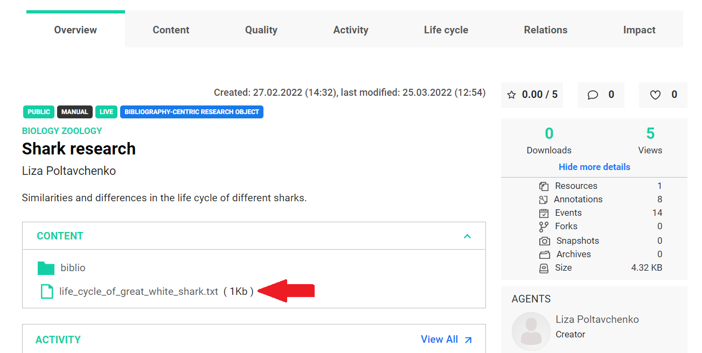
All resources are placed under the Content tab. 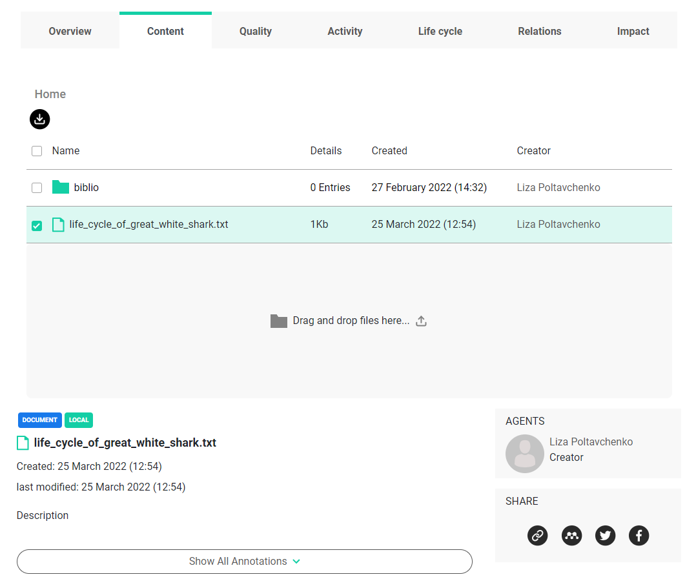
One important thing to pay attention to is that a result of adding a resource is the Resource Object itself. So now if we want to reuse it or keep exploring we can refer to the variable that it was assigned to. In our case this was a txt_res.
First, let’s take a look at its metadata.
[14]:
txt_res.show_metadata()
[14]:
{'identifier': '1872179f-6e5b-43db-a535-bbbe562e0263',
'type': 'Document',
'source': 'internal',
'title': None,
'description': None,
'url': None,
'folder': None,
'path': 'life_cycle_of_great_white_shark.txt',
'size': 1000,
'creator': 'liza.poltavchenko00@gmail.com',
'created_on': '2022-03-25T11:54:04.216070+0000',
'modified_on': '2022-03-25T11:54:08.773328+0000',
'download_url': 'https://rohub2020-rohub.apps.paas-dev.psnc.pl/api/resources/1872179f-6e5b-43db-a535-bbbe562e0263/download/'}
The resource object also has a show_full_metadata function, just like the research object, but unlike the research object, the resource object does not need to load additional metadata first.
[15]:
txt_res.show_full_metadata()
[15]:
{'identifier': '1872179f-6e5b-43db-a535-bbbe562e0263',
'shared_link': 'https://w3id.org/ro-id-dev/43833c23-2242-48ef-8f0a-d925c0e1d3e9/resources/1872179f-6e5b-43db-a535-bbbe562e0263',
'title': None,
'folder': None,
'ros': ['43833c23-2242-48ef-8f0a-d925c0e1d3e9'],
'description': None,
'url': None,
'name': 'life_cycle_of_great_white_shark.txt',
'filename': 'life_cycle_of_great_white_shark.txt',
'path': 'life_cycle_of_great_white_shark.txt',
'size': 1000,
'download_url': 'https://rohub2020-rohub.apps.paas-dev.psnc.pl/api/resources/1872179f-6e5b-43db-a535-bbbe562e0263/download/',
'type': 'Document',
'created': '2022-03-25T11:54:04.216070+0000',
'creator': 'liza.poltavchenko00@gmail.com',
'modificator': None,
'modified': '2022-03-25T11:54:08.773328+0000',
'created_on': '2022-03-25T11:54:04.216070+0000',
'created_by': 'liza.poltavchenko00@gmail.com',
'modified_on': '2022-03-25T11:54:08.773328+0000',
'modified_by': None,
'original_created_on': None,
'original_created_by': None,
'original_creator_name': None,
'authors_credits': ['liza.poltavchenko00@gmail.com'],
'contributors_credits': [],
'shared': False,
'doi': None,
'license': None,
'read_only': False,
'api_link': 'https://rohub2020-rohub.apps.paas-dev.psnc.pl/api/resources/1872179f-6e5b-43db-a535-bbbe562e0263/'}
Add external resources
Now that we know how to add an internal resource, let’s explore adding an external one. The process is almost identical.
For example, let’s take this scientific publication about the bacteriology of teeth from a great white shark. We can set its type as a “Paper”.
[16]:
article_res_type = "Paper"
Now, the second required parameter - input url.
[17]:
article_url = "https://journals.asm.org/doi/epdf/10.1128/jcm.20.5.849-851.1984"
[18]:
article_res = ro.add_external_resource(res_type = article_res_type, input_url = article_url)
Resource was successfully created with id = 0aa05d06-0ad5-4c89-b59e-1af5c17e7739
We can see that list of resources associated with our Research Object is now expanded by the article we just added.
[19]:
ro.list_resources()
[19]:
| identifier | type | source | title | description | url | name | path | size | creator | created_on | modified_on | download_url | |
|---|---|---|---|---|---|---|---|---|---|---|---|---|---|
| 0 | 0aa05d06-0ad5-4c89-b59e-1af5c17e7739 | Paper | external | None | None | https://journals.asm.org/doi/epdf/10.1128/jcm.... | None | https://journals.asm.org/doi/epdf/10.1128/jcm.... | NaN | liza.poltavchenko00@gmail.com | 2022-03-25T12:12:18.548321+0000 | 2022-03-25T12:12:19.385625+0000 | https://journals.asm.org/doi/epdf/10.1128/jcm.... |
| 1 | 1872179f-6e5b-43db-a535-bbbe562e0263 | Document | internal | None | None | None | life_cycle_of_great_white_shark.txt | life_cycle_of_great_white_shark.txt | 1000.0 | liza.poltavchenko00@gmail.com | 2022-03-25T11:54:04.216070+0000 | 2022-03-25T11:54:08.773328+0000 | https://rohub2020-rohub.apps.paas-dev.psnc.pl/... |
We can also check the article in the rohub portal.
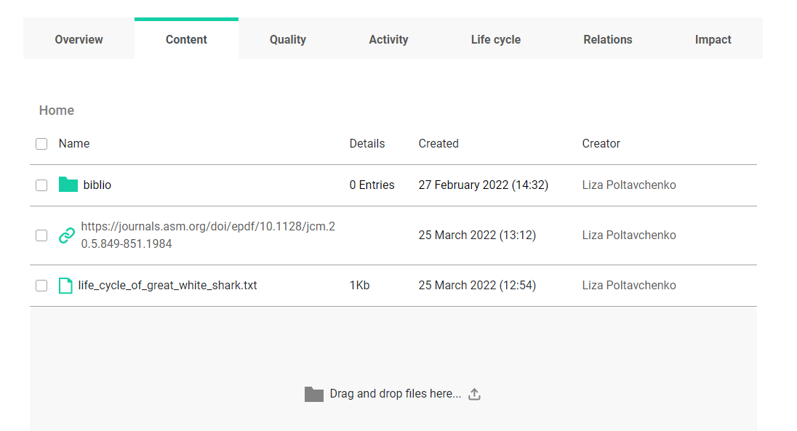Add resources from zip
Imagine the situation where we got a bundle of resources that we would like to associate with the Research Object. Based on what we have seen so far, we could potentially use a for loop to iterate over resources and regularly add them. However, if we don’t care about specifying any additional resource pieces of information, we can simply add them as one bundle from the zip package. To do that we can utilize add_resource_from_zip() function.
In our next example, we got a zip file that contains two videos and one pdf file.
[20]:
zip_path = "./resources.zip"
resources_from_zip = ro.add_resource_from_zip(path_to_zip = zip_path)
Trying to confirm status of the job. It can take a while...
[21]:
ro.list_resources()
[21]:
| identifier | type | source | title | description | url | name | path | size | creator | created_on | modified_on | download_url | |
|---|---|---|---|---|---|---|---|---|---|---|---|---|---|
| 0 | 0aa05d06-0ad5-4c89-b59e-1af5c17e7739 | Paper | external | None | None | https://journals.asm.org/doi/epdf/10.1128/jcm.... | None | https://journals.asm.org/doi/epdf/10.1128/jcm.... | NaN | liza.poltavchenko00@gmail.com | 2022-03-25T12:12:18.548321+0000 | 2022-03-25T12:12:19.385625+0000 | https://journals.asm.org/doi/epdf/10.1128/jcm.... |
| 1 | 1872179f-6e5b-43db-a535-bbbe562e0263 | Document | internal | None | None | None | life_cycle_of_great_white_shark.txt | life_cycle_of_great_white_shark.txt | 1000.0 | liza.poltavchenko00@gmail.com | 2022-03-25T11:54:04.216070+0000 | 2022-03-25T11:54:08.773328+0000 | https://rohub2020-rohub.apps.paas-dev.psnc.pl/... |
| 2 | 5bb4fc3a-30b6-4551-9c3c-9bcdf0962394 | File | internal | None | None | None | presentation.pdf | presentation.pdf | NaN | liza.poltavchenko00@gmail.com | 2022-03-25T12:16:13.648398+0000 | 2022-03-25T12:16:16.374553+0000 | https://rohub2020-rohub.apps.paas-dev.psnc.pl/... |
| 3 | f7f77553-200d-4120-a1d2-ff0a359ff488 | File | internal | None | None | None | video_1.mp4 | video_1.mp4 | NaN | liza.poltavchenko00@gmail.com | 2022-03-25T12:16:14.331689+0000 | 2022-03-25T12:16:16.657621+0000 | https://rohub2020-rohub.apps.paas-dev.psnc.pl/... |
| 4 | 2a161917-90fa-4b57-8121-df42d9d68f69 | File | internal | None | None | None | video_2.mp4 | video_2.mp4 | NaN | liza.poltavchenko00@gmail.com | 2022-03-25T12:16:15.120380+0000 | 2022-03-25T12:16:17.648394+0000 | https://rohub2020-rohub.apps.paas-dev.psnc.pl/... |
As we can see by default, the content of our zip file was loaded as a “File”. At this point, each resource from our zip package is represented as a Resource with its unique id. It is possible to modify them to our needs by changing metadata or even content. 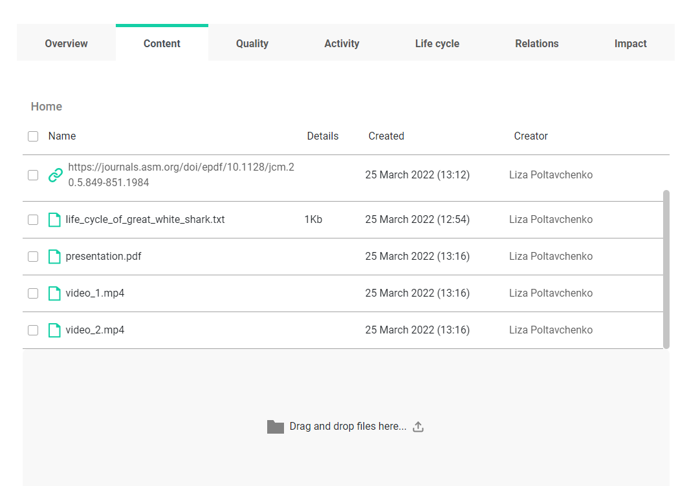
One important note is that this function will not return a Resource object as two others did. It will give us job details, though. Depending on the number and size of files inside the zip package, loading those resources may take a while. That is where job identifiers can become handy. If the job is still pending, one can decide to check the status again using the is_job_success() function.
[22]:
resources_from_zip
[22]:
{'identifier': '3db9a106-2638-4800-9560-9290ed869153',
'created_by': 'liza.poltavchenko00@gmail.com',
'created_on': '2022-03-25T12:16:11.511962+0000',
'started_on': '2022-03-25T12:16:12.505780+0000',
'finished_on': '2022-03-25T12:16:22.748033+0000',
'operation': 'RO_RESOURCES_ZIP_UPLOAD',
'status': 'SUCCESS',
'input': 'resources.zip',
'output': 'Task done successfully',
'results': 'https://rohub2020-rohub.apps.paas-dev.psnc.pl/api/ros/43833c23-2242-48ef-8f0a-d925c0e1d3e9/',
'warnings': None,
'execution': '10.242253',
'api_link': 'https://rohub2020-rohub.apps.paas-dev.psnc.pl/api/jobs/3db9a106-2638-4800-9560-9290ed869153/'}
One shouldn’t confuse using a zip archive as a literal Resource with the process of uploading a zip package that was treated as a bundle of resources. The former will result in one resource, namely a zip archive, and the latter will result in multiple resources (its number will be equal to the number of files in the zip bundle).
Let’s try to add a literal zip file as a Resource to make it all clear.
[23]:
res_zip = ro.add_internal_resource(res_type = 'Other', file_path = zip_path)
Resource was successfully created with id = 29690986-efc0-4dec-a7aa-0966f6daa1c9
[24]:
ro.list_resources()
[24]:
| identifier | type | source | title | description | url | name | path | size | creator | created_on | modified_on | download_url | |
|---|---|---|---|---|---|---|---|---|---|---|---|---|---|
| 0 | 0aa05d06-0ad5-4c89-b59e-1af5c17e7739 | Paper | external | None | None | https://journals.asm.org/doi/epdf/10.1128/jcm.... | None | https://journals.asm.org/doi/epdf/10.1128/jcm.... | NaN | liza.poltavchenko00@gmail.com | 2022-03-25T12:12:18.548321+0000 | 2022-03-25T12:12:19.385625+0000 | https://journals.asm.org/doi/epdf/10.1128/jcm.... |
| 1 | 1872179f-6e5b-43db-a535-bbbe562e0263 | Document | internal | None | None | None | life_cycle_of_great_white_shark.txt | life_cycle_of_great_white_shark.txt | 1000.0 | liza.poltavchenko00@gmail.com | 2022-03-25T11:54:04.216070+0000 | 2022-03-25T11:54:08.773328+0000 | https://rohub2020-rohub.apps.paas-dev.psnc.pl/... |
| 2 | 5bb4fc3a-30b6-4551-9c3c-9bcdf0962394 | File | internal | None | None | None | presentation.pdf | presentation.pdf | NaN | liza.poltavchenko00@gmail.com | 2022-03-25T12:16:13.648398+0000 | 2022-03-25T12:16:16.374553+0000 | https://rohub2020-rohub.apps.paas-dev.psnc.pl/... |
| 3 | 29690986-efc0-4dec-a7aa-0966f6daa1c9 | Other | internal | None | None | None | resources.zip | resources.zip | 32912886.0 | liza.poltavchenko00@gmail.com | 2022-03-25T12:17:54.943091+0000 | 2022-03-25T12:17:57.529986+0000 | https://rohub2020-rohub.apps.paas-dev.psnc.pl/... |
| 4 | f7f77553-200d-4120-a1d2-ff0a359ff488 | File | internal | None | None | None | video_1.mp4 | video_1.mp4 | NaN | liza.poltavchenko00@gmail.com | 2022-03-25T12:16:14.331689+0000 | 2022-03-25T12:16:16.657621+0000 | https://rohub2020-rohub.apps.paas-dev.psnc.pl/... |
| 5 | 2a161917-90fa-4b57-8121-df42d9d68f69 | File | internal | None | None | None | video_2.mp4 | video_2.mp4 | NaN | liza.poltavchenko00@gmail.com | 2022-03-25T12:16:15.120380+0000 | 2022-03-25T12:16:17.648394+0000 | https://rohub2020-rohub.apps.paas-dev.psnc.pl/... |
Loading existing Resource object
Before one can work with an existing resource object, it has to be loaded using the rohub.resource_load() function, which expects one argument - the resource object’s identifier. This will return a reusable python object, exactly as it was with creation.
Example 1 - loading our own Recource
[26]:
ro_resources = ro.list_resources()
loaded_res_id = ro_resources.loc[4, 'identifier']
loaded_res = rohub.resource_load(identifier = loaded_res_id)
Resource was successfully loaded with id = f7f77553-200d-4120-a1d2-ff0a359ff488
[27]:
loaded_res.show_metadata()
[27]:
{'identifier': 'f7f77553-200d-4120-a1d2-ff0a359ff488',
'type': 'File',
'source': 'internal',
'title': None,
'description': None,
'url': None,
'folder': None,
'path': 'video_1.mp4',
'size': None,
'creator': 'liza.poltavchenko00@gmail.com',
'created_on': '2022-03-25T12:16:14.331689+0000',
'modified_on': '2022-03-25T12:16:16.657621+0000',
'download_url': 'https://rohub2020-rohub.apps.paas-dev.psnc.pl/api/resources/f7f77553-200d-4120-a1d2-ff0a359ff488/download/'}
Example 2 - loading Resource that belongs to someone else
[36]:
ro_id = '812f30bc-5ab1-409f-9fa8-0023f2e445f7'
ro_resources = rohub.ros_list_resources(identifier = ro_id)
ro_resources[6:]
[36]:
| identifier | type | source | title | description | url | name | path | size | creator | created_on | modified_on | download_url | |
|---|---|---|---|---|---|---|---|---|---|---|---|---|---|
| 6 | 44c1f126-91c3-4e79-9959-e8d5f051d239 | PROCESS | external | None | None | http://google.pl | None | http://google.pl | NaN | bjaniak@man.poznan.pl | 2022-03-15T17:17:06.887932+0000 | 2022-03-15T17:17:08.940298+0000 | http://google.pl |
| 7 | 135de6db-e7c8-41f1-8d2f-8b743299702e | PROCESS | internal | new title | None | None | new title | bogusz_parent_folder/rohub.png | 2900.0 | bjaniak@man.poznan.pl | 2022-02-03T18:00:54.018159+0000 | 2022-03-22T11:36:06.103468+0000 | https://rohub2020-rohub.apps.paas-dev.psnc.pl/... |
[37]:
loaded_res2_id = ro_resources.loc[7, 'identifier']
loaded_res2 = rohub.resource_load(identifier = loaded_res2_id)
loaded_res2.show_metadata()
Resource was successfully loaded with id = 135de6db-e7c8-41f1-8d2f-8b743299702e
[37]:
{'identifier': '135de6db-e7c8-41f1-8d2f-8b743299702e',
'type': 'PROCESS',
'source': 'internal',
'title': 'new title',
'description': None,
'url': None,
'folder': 'bogusz_parent_folder',
'path': 'bogusz_parent_folder/rohub.png',
'size': 2900,
'creator': 'bjaniak@man.poznan.pl',
'created_on': '2022-02-03T18:00:54.018159+0000',
'modified_on': '2022-03-22T11:36:06.103468+0000',
'download_url': 'https://rohub2020-rohub.apps.paas-dev.psnc.pl/api/resources/135de6db-e7c8-41f1-8d2f-8b743299702e/download/'}
Even though we can’t modify the Resource that we don’t have appropriate permissions to, we still may want to load to inspect, and download its content locally.
Downloading Resource
To download the selected resource to the local file storage, we can use the Resource object method .download(). The function has two parameters: a filename, including the extension and a path where the file should be downloaded. If we don’t specify a path to the function, the resource will be downloaded into the current working directory by default.
Let’s try to download another user’s resource represented by the loaded_res2 variable.
First, we should check the filename of the loaded resource from the metadata to give the correct extension to the downloaded resource.
[38]:
loaded_res2.filename
[38]:
'rohub.png'
By default, the resource is saved to the current working directory and expects only one required parameter - filename.
[40]:
res_filename = 'res_image.png'
loaded_res2.download(resource_filename = res_filename)
File was successfully downloaded.
[40]:
'res_image.png'
Now let’s use the ls command and find the downloaded resource.
[47]:
ls
Volume in drive C has no label.
Volume Serial Number is 9AD7-138D
Directory of C:\Users\liza\Desktop\rohub_tutorial
27.03.2022 12:14 <DIR> .
27.03.2022 12:14 <DIR> ..
25.03.2022 13:53 1˙000 life_cycle_of_great_white_shark.txt
27.03.2022 12:12 2˙900 res_image.png
27.03.2022 12:14 187˙464 tutorial_part3.ipynb
3 File(s) 191˙364 bytes
2 Dir(s) 222˙762˙053˙632 bytes free
Now let’s try to download our resource to another existing folder. For this purpose, to set the path attribute to a specific folder. If the folder does not exist, it will be automatically created.
[48]:
res_filename = "res_image2.png"
res_path = 'Resources'
loaded_res2.download(resource_filename = res_filename, path = res_path)
File was successfully downloaded into Resources.
[48]:
'Resources\\res_image2.png'
[56]:
cd Resources
C:\Users\liza\Desktop\rohub_tutorial\Resources
[57]:
ls
Volume in drive C has no label.
Volume Serial Number is 9AD7-138D
Directory of C:\Users\liza\Desktop\rohub_tutorial\Resources
27.03.2022 12:20 <DIR> .
27.03.2022 12:20 <DIR> ..
27.03.2022 12:20 2˙900 res_image2.png
1 File(s) 2˙900 bytes
2 Dir(s) 222˙761˙934˙848 bytes free
Modifying Resource’s metadata
After creating or loading a resource, we can edit the resource’s metadata.
Example 1 - editing our own resource
Let’s try to edit the metadata of our own resource that was previously loaded and is represented by the variable loaded_res.
[59]:
loaded_res.show_metadata()
[59]:
{'identifier': 'f7f77553-200d-4120-a1d2-ff0a359ff488',
'type': 'File',
'source': 'internal',
'title': None,
'description': None,
'url': None,
'folder': None,
'path': 'video_1.mp4',
'size': None,
'creator': 'liza.poltavchenko00@gmail.com',
'created_on': '2022-03-25T12:16:14.331689+0000',
'modified_on': '2022-03-25T12:16:16.657621+0000',
'download_url': 'https://rohub2020-rohub.apps.paas-dev.psnc.pl/api/resources/f7f77553-200d-4120-a1d2-ff0a359ff488/download/'}
There is no title associated with this resource when displaying metadata. We can aim at adding one.
To confirm, we can access the title attribute directly. As expected, there is no title value.
[60]:
print(loaded_res.title)
None
Now let’s set a new value for the title that will be relevant to its content; this video shows a swimming shark. 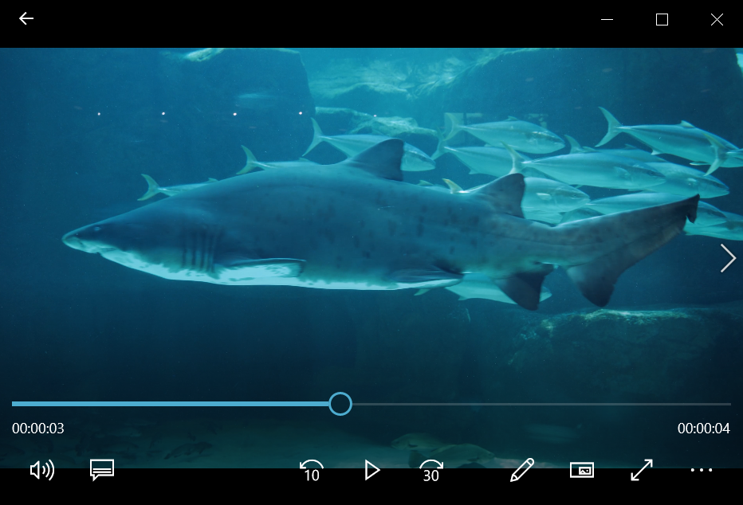
[69]:
new_title = 'A swimming shark'
loaded_res.title = new_title
[70]:
loaded_res.title
[70]:
'A swimming shark'
We have provided a new title for our resource object, however, if we take a look in the service, or through the API we can see that the changes we made locally didn’t appear there! 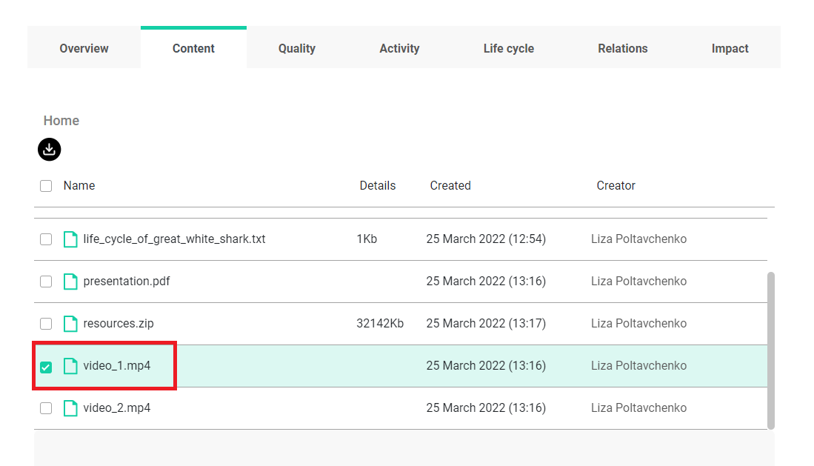
By design, changes we make locally have to be explicitly updated to appear in the API/Portal. This works similar to modifying and updating Research Objects.
We can use the update_metadata() function to update our local resource so that it becomes aligned with service data and visible in the API or Portal.
[71]:
loaded_res.update_metadata()
[71]:
{'title': 'A swimming shark', 'type': 'File'}
Now, we can see that changes are published in the portal. We also see the original path with a new title. 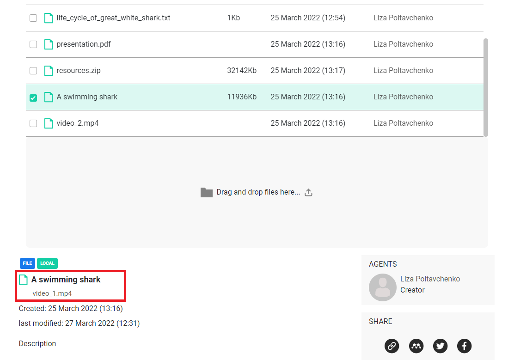
Example 2 - editing a Resource that belongs to someone else
In this example, let’s try to edit the metadata of a resource that belongs to another user. We could use the one that was previously loaded and is represented by the variable loaded_res2.
[72]:
loaded_res2.show_metadata()
[72]:
{'identifier': '135de6db-e7c8-41f1-8d2f-8b743299702e',
'type': 'PROCESS',
'source': 'internal',
'title': 'new title',
'description': None,
'url': None,
'folder': 'bogusz_parent_folder',
'path': 'bogusz_parent_folder/rohub.png',
'size': 2900,
'creator': 'bjaniak@man.poznan.pl',
'created_on': '2022-02-03T18:00:54.018159+0000',
'modified_on': '2022-03-22T11:36:06.103468+0000',
'download_url': 'https://rohub2020-rohub.apps.paas-dev.psnc.pl/api/resources/135de6db-e7c8-41f1-8d2f-8b743299702e/download/'}
We can try to set a new value for the title by referring to the creator of resource.
[76]:
loaded_res2.creator
[76]:
'bjaniak@man.poznan.pl'
[77]:
new_title = 'bjaniak_res_image'
loaded_res2.title = new_title
loaded_res2.show_metadata()
[77]:
{'identifier': '135de6db-e7c8-41f1-8d2f-8b743299702e',
'type': 'PROCESS',
'source': 'internal',
'title': 'bjaniak_res_image',
'description': None,
'url': None,
'folder': 'bogusz_parent_folder',
'path': 'bogusz_parent_folder/rohub.png',
'size': 2900,
'creator': 'bjaniak@man.poznan.pl',
'created_on': '2022-02-03T18:00:54.018159+0000',
'modified_on': '2022-03-22T11:36:06.103468+0000',
'download_url': 'https://rohub2020-rohub.apps.paas-dev.psnc.pl/api/resources/135de6db-e7c8-41f1-8d2f-8b743299702e/download/'}
[ ]:
loaded_res2.update_metadata()
An error has occurred: SystemExit: {"detail":"You do not have permission to perform this action."}.
Similar to updating a Research Object - we can play with resources locally, but we can’t publish changes unless we have sufficient permissions.
Only the resource creator can publish changes!
Modifying Resource’s content
In addition to updating the metadata of a resource, we can also update the content of a resource, for this we can use the update_content function of the Resource object.
The library provides a separate method update_content() for updating resources’ content.
This function has two parameters that are mutually exclusive: - input_url which is used to update the content for the external resource - file_path which is used to update the content for the internal resource
The resource content will be overwritten!
Example 1 - updating content of external Resource
[78]:
ro.show_metadata()
[78]:
{'identifier': '43833c23-2242-48ef-8f0a-d925c0e1d3e9',
'shared_link': 'https://w3id.org/ro-id-dev/43833c23-2242-48ef-8f0a-d925c0e1d3e9',
'title': 'Shark research',
'description': 'Similarities and differences in the life cycle of different sharks.',
'status': 'LIVE',
'access_mode': 'PUBLIC',
'type': 'Bibliography-centric Research Object',
'template': 'Bibliography Centric Research Object folders structure',
'created': '2022-02-27T13:32:54.305241Z',
'creator': 'liza.poltavchenko00@gmail.com',
'modificator': 'liza.poltavchenko00@gmail.com',
'modified': '2022-03-25T11:54:08.805007Z',
'importer': None,
'research_areas': ['Biology', 'Zoology'],
'owner': 'liza.poltavchenko00@gmail.com',
'editors': ['bjaniak@man.poznan.pl'],
'readers': [],
'rating': '0.00',
'number_of_ratings': 0,
'number_of_likes': 0,
'number_of_dislikes': 0,
'completness': 51,
'size': 4423,
'creation_mode': 'MANUAL',
'doi': None,
'api_link': 'https://rohub2020-rohub.apps.paas-dev.psnc.pl/api/ros/43833c23-2242-48ef-8f0a-d925c0e1d3e9/'}
[79]:
my_res = ro.list_resources()
my_res
[79]:
| identifier | type | source | title | description | url | name | path | size | creator | created_on | modified_on | download_url | |
|---|---|---|---|---|---|---|---|---|---|---|---|---|---|
| 0 | 0aa05d06-0ad5-4c89-b59e-1af5c17e7739 | Paper | external | None | None | https://journals.asm.org/doi/epdf/10.1128/jcm.... | None | https://journals.asm.org/doi/epdf/10.1128/jcm.... | NaN | liza.poltavchenko00@gmail.com | 2022-03-25T12:12:18.548321+0000 | 2022-03-25T12:12:19.385625+0000 | https://journals.asm.org/doi/epdf/10.1128/jcm.... |
| 1 | 1872179f-6e5b-43db-a535-bbbe562e0263 | Document | internal | None | None | None | life_cycle_of_great_white_shark.txt | life_cycle_of_great_white_shark.txt | 1000.0 | liza.poltavchenko00@gmail.com | 2022-03-25T11:54:04.216070+0000 | 2022-03-25T11:54:08.773328+0000 | https://rohub2020-rohub.apps.paas-dev.psnc.pl/... |
| 2 | 5bb4fc3a-30b6-4551-9c3c-9bcdf0962394 | File | internal | None | None | None | presentation.pdf | presentation.pdf | NaN | liza.poltavchenko00@gmail.com | 2022-03-25T12:16:13.648398+0000 | 2022-03-25T12:16:16.374553+0000 | https://rohub2020-rohub.apps.paas-dev.psnc.pl/... |
| 3 | 29690986-efc0-4dec-a7aa-0966f6daa1c9 | Other | internal | None | None | None | resources.zip | resources.zip | 32912886.0 | liza.poltavchenko00@gmail.com | 2022-03-25T12:17:54.943091+0000 | 2022-03-25T12:17:57.529986+0000 | https://rohub2020-rohub.apps.paas-dev.psnc.pl/... |
| 4 | f7f77553-200d-4120-a1d2-ff0a359ff488 | File | internal | A swimming shark | None | None | A swimming shark | video_1.mp4 | 12221703.0 | liza.poltavchenko00@gmail.com | 2022-03-25T12:16:14.331689+0000 | 2022-03-27T10:31:48.385952+0000 | https://rohub2020-rohub.apps.paas-dev.psnc.pl/... |
| 5 | 2a161917-90fa-4b57-8121-df42d9d68f69 | File | internal | None | None | None | video_2.mp4 | video_2.mp4 | NaN | liza.poltavchenko00@gmail.com | 2022-03-25T12:16:15.120380+0000 | 2022-03-25T12:16:17.648394+0000 | https://rohub2020-rohub.apps.paas-dev.psnc.pl/... |
[80]:
article_res_id = my_res.loc[0, 'identifier']
article_res = rohub.resource_load(identifier = article_res_id)
Resource was successfully loaded with id = 0aa05d06-0ad5-4c89-b59e-1af5c17e7739
Let’s confirm that this is indeed an external Resource.
[81]:
article_res.show_metadata()
[81]:
{'identifier': '0aa05d06-0ad5-4c89-b59e-1af5c17e7739',
'type': 'Paper',
'source': 'external',
'title': None,
'description': None,
'url': 'https://journals.asm.org/doi/epdf/10.1128/jcm.20.5.849-851.1984',
'folder': None,
'path': 'https://journals.asm.org/doi/epdf/10.1128/jcm.20.5.849-851.1984',
'size': None,
'creator': 'liza.poltavchenko00@gmail.com',
'created_on': '2022-03-25T12:12:18.548321+0000',
'modified_on': '2022-03-25T12:12:19.385625+0000',
'download_url': 'https://journals.asm.org/doi/epdf/10.1128/jcm.20.5.849-851.1984'}
[82]:
new_url = 'https://en.wikipedia.org/wiki/Great_white_shark'
article_res.update_content(input_url = new_url)
[82]:
{'identifier': '0aa05d06-0ad5-4c89-b59e-1af5c17e7739',
'shared_link': 'https://w3id.org/ro-id-dev/43833c23-2242-48ef-8f0a-d925c0e1d3e9/resources/0aa05d06-0ad5-4c89-b59e-1af5c17e7739',
'title': None,
'folder': None,
'ros': ['43833c23-2242-48ef-8f0a-d925c0e1d3e9'],
'description': None,
'url': 'https://en.wikipedia.org/wiki/Great_white_shark',
'name': None,
'filename': None,
'path': 'https://en.wikipedia.org/wiki/Great_white_shark',
'size': None,
'download_url': 'https://en.wikipedia.org/wiki/Great_white_shark',
'type': 'Paper',
'created': '2022-03-25T12:12:18.548321+0000',
'creator': 'liza.poltavchenko00@gmail.com',
'modificator': 'liza.poltavchenko00@gmail.com',
'modified': '2022-03-27T10:48:34.311541+0000',
'created_on': '2022-03-25T12:12:18.548321+0000',
'created_by': 'liza.poltavchenko00@gmail.com',
'modified_on': '2022-03-27T10:48:34.311541+0000',
'modified_by': 'liza.poltavchenko00@gmail.com',
'original_created_on': None,
'original_created_by': None,
'original_creator_name': None,
'authors_credits': ['liza.poltavchenko00@gmail.com'],
'contributors_credits': [],
'shared': False,
'doi': None,
'license': None,
'read_only': False,
'api_link': 'https://rohub2020-rohub.apps.paas-dev.psnc.pl/api/resources/0aa05d06-0ad5-4c89-b59e-1af5c17e7739/'}
We can now see the changes in the portal as well! 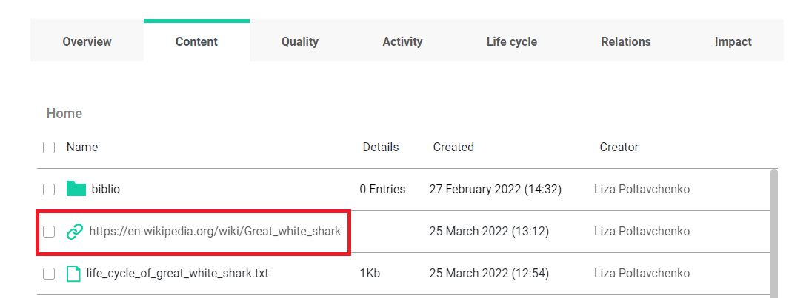
Example 2 - updating content of internal Resource
[83]:
my_res = ro.list_resources()
my_res
[83]:
| identifier | type | source | title | description | url | name | path | size | creator | created_on | modified_on | download_url | |
|---|---|---|---|---|---|---|---|---|---|---|---|---|---|
| 0 | 0aa05d06-0ad5-4c89-b59e-1af5c17e7739 | Paper | external | None | None | https://en.wikipedia.org/wiki/Great_white_shark | None | https://en.wikipedia.org/wiki/Great_white_shark | NaN | liza.poltavchenko00@gmail.com | 2022-03-25T12:12:18.548321+0000 | 2022-03-27T10:48:34.905035+0000 | https://en.wikipedia.org/wiki/Great_white_shark |
| 1 | 1872179f-6e5b-43db-a535-bbbe562e0263 | Document | internal | None | None | None | life_cycle_of_great_white_shark.txt | life_cycle_of_great_white_shark.txt | 1000.0 | liza.poltavchenko00@gmail.com | 2022-03-25T11:54:04.216070+0000 | 2022-03-25T11:54:08.773328+0000 | https://rohub2020-rohub.apps.paas-dev.psnc.pl/... |
| 2 | 5bb4fc3a-30b6-4551-9c3c-9bcdf0962394 | File | internal | None | None | None | presentation.pdf | presentation.pdf | NaN | liza.poltavchenko00@gmail.com | 2022-03-25T12:16:13.648398+0000 | 2022-03-25T12:16:16.374553+0000 | https://rohub2020-rohub.apps.paas-dev.psnc.pl/... |
| 3 | 29690986-efc0-4dec-a7aa-0966f6daa1c9 | Other | internal | None | None | None | resources.zip | resources.zip | 32912886.0 | liza.poltavchenko00@gmail.com | 2022-03-25T12:17:54.943091+0000 | 2022-03-25T12:17:57.529986+0000 | https://rohub2020-rohub.apps.paas-dev.psnc.pl/... |
| 4 | f7f77553-200d-4120-a1d2-ff0a359ff488 | File | internal | A swimming shark | None | None | A swimming shark | video_1.mp4 | 12221703.0 | liza.poltavchenko00@gmail.com | 2022-03-25T12:16:14.331689+0000 | 2022-03-27T10:31:48.385952+0000 | https://rohub2020-rohub.apps.paas-dev.psnc.pl/... |
| 5 | 2a161917-90fa-4b57-8121-df42d9d68f69 | File | internal | None | None | None | video_2.mp4 | video_2.mp4 | NaN | liza.poltavchenko00@gmail.com | 2022-03-25T12:16:15.120380+0000 | 2022-03-25T12:16:17.648394+0000 | https://rohub2020-rohub.apps.paas-dev.psnc.pl/... |
Let’s pick a Resource containing a document named “life_cycle_of_great_white_shark.txt”.
[84]:
document_res_id = my_res.loc[1, 'identifier']
document_res = rohub.resource_load(identifier = document_res_id)
document_res.show_metadata()
Resource was successfully loaded with id = 1872179f-6e5b-43db-a535-bbbe562e0263
[84]:
{'identifier': '1872179f-6e5b-43db-a535-bbbe562e0263',
'type': 'Document',
'source': 'internal',
'title': None,
'description': None,
'url': None,
'folder': None,
'path': 'life_cycle_of_great_white_shark.txt',
'size': 1000,
'creator': 'liza.poltavchenko00@gmail.com',
'created_on': '2022-03-25T11:54:04.216070+0000',
'modified_on': '2022-03-25T11:54:08.773328+0000',
'download_url': 'https://rohub2020-rohub.apps.paas-dev.psnc.pl/api/resources/1872179f-6e5b-43db-a535-bbbe562e0263/download/'}
One important thing to notice is that this method requires that the path is pointing to an existing file. Users will be prompted if files don’t exist and the content of the Resource will not be updated!
[85]:
new_path = 'life_cycle_of_great_white_shark_ver2.txt'
document_res.update_content(file_path = new_path)
[85]:
{'identifier': '1872179f-6e5b-43db-a535-bbbe562e0263',
'shared_link': 'https://w3id.org/ro-id-dev/43833c23-2242-48ef-8f0a-d925c0e1d3e9/resources/1872179f-6e5b-43db-a535-bbbe562e0263',
'title': None,
'folder': None,
'ros': ['43833c23-2242-48ef-8f0a-d925c0e1d3e9'],
'description': None,
'url': None,
'name': 'life_cycle_of_great_white_shark_ver2.txt',
'filename': 'life_cycle_of_great_white_shark_ver2.txt',
'path': 'life_cycle_of_great_white_shark_ver2.txt',
'size': 2127,
'download_url': 'https://rohub2020-rohub.apps.paas-dev.psnc.pl/api/resources/1872179f-6e5b-43db-a535-bbbe562e0263/download/',
'type': 'Document',
'created': '2022-03-25T11:54:04.216070+0000',
'creator': 'liza.poltavchenko00@gmail.com',
'modificator': 'liza.poltavchenko00@gmail.com',
'modified': '2022-03-27T10:52:35.909689+0000',
'created_on': '2022-03-25T11:54:04.216070+0000',
'created_by': 'liza.poltavchenko00@gmail.com',
'modified_on': '2022-03-27T10:52:35.909689+0000',
'modified_by': 'liza.poltavchenko00@gmail.com',
'original_created_on': None,
'original_created_by': None,
'original_creator_name': None,
'authors_credits': ['liza.poltavchenko00@gmail.com'],
'contributors_credits': [],
'shared': False,
'doi': None,
'license': None,
'read_only': False,
'api_link': 'https://rohub2020-rohub.apps.paas-dev.psnc.pl/api/resources/1872179f-6e5b-43db-a535-bbbe562e0263/'}
We can also see the update in the portal. 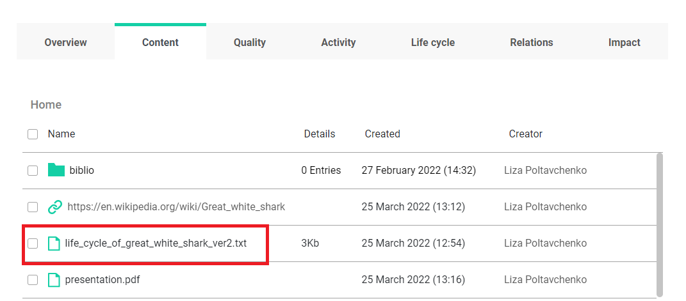
Folders
For the convenience of navigating through the resources belonging to the same research object, we can create different folders to store our resources.
Creating a new folder
We can use the add_folders() function to create/add a new folder to the loaded research object.
Let’s use the research object which is represented by the ro variable and create a new folder for media resources.
[86]:
folder_name = "Media"
folder_description = "Videos, photos and images"
ro.add_folders(name = folder_name, description = folder_description)
[86]:
{'identifier': '201b7d33-6982-4a85-bd67-d92eeb788156',
'shared_link': 'https://w3id.org/ro-id-dev/43833c23-2242-48ef-8f0a-d925c0e1d3e9/folders/201b7d33-6982-4a85-bd67-d92eeb788156',
'name': 'Media',
'description': 'Videos, photos and images',
'parent_folder': None,
'ro': '43833c23-2242-48ef-8f0a-d925c0e1d3e9',
'created': '2022-03-27T10:54:02.304776+0000',
'creator': 'liza.poltavchenko00@gmail.com',
'modificator': None,
'modified': '2022-03-27T10:54:02.305365+0000',
'created_on': '2022-03-27T10:54:02.304776+0000',
'created_by': 'liza.poltavchenko00@gmail.com',
'modified_on': '2022-03-27T10:54:02.305365+0000',
'modified_by': None,
'original_created_on': None,
'original_created_by': None,
'original_creator_name': None,
'authors_credits': ['liza.poltavchenko00@gmail.com'],
'contributors_credits': [],
'path': 'Media',
'read_only': False,
'api_link': 'https://rohub2020-rohub.apps.paas-dev.psnc.pl/api/folders/201b7d33-6982-4a85-bd67-d92eeb788156/'}
We can use the list_folders() function to list folders associated with research object and check our new folder.
[87]:
ro_folders = ro.list_folders()
ro_folders
[87]:
| identifier | name | description | creator | created_on | modified_on | path | |
|---|---|---|---|---|---|---|---|
| 0 | 843b6081-89de-41c8-8fce-c47b5ea789f5 | biblio | None | liza.poltavchenko00@gmail.com | 2022-02-27T13:32:54.720931+0000 | 2022-02-27T13:32:54.721650+0000 | biblio |
| 1 | 201b7d33-6982-4a85-bd67-d92eeb788156 | Media | Videos, photos and images | liza.poltavchenko00@gmail.com | 2022-03-27T10:54:02.304776+0000 | 2022-03-27T10:54:02.305365+0000 | Media |
We also can see the new folder in portal. 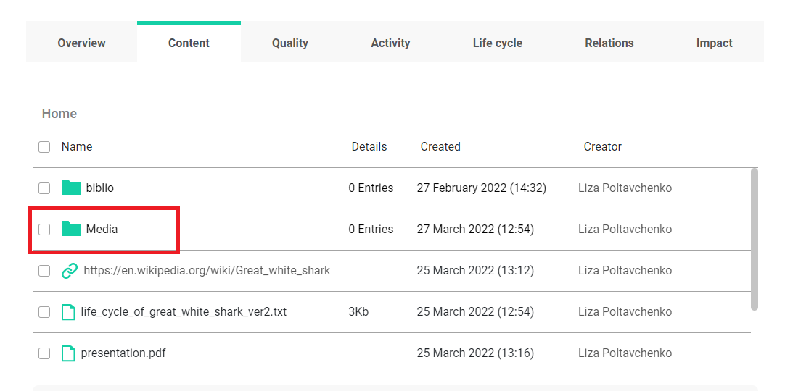
Name is a required parameter of the add_folders() function. However, the description is optional. parent_folder is another optional parameter that can be used to pass a path to the parent folder under which the new folder should be created.
Let’s try to create a subfolder in the “Media” folder, which will be called “Videos”.
[89]:
subfolder_parent = ro_folders.loc[1, 'path']
subfolder_name = "Videos"
ro.add_folders(name = subfolder_name, parent_folder = subfolder_parent)
[89]:
{'identifier': '33cb9497-af92-44bc-a197-8269b9b8759f',
'shared_link': 'https://w3id.org/ro-id-dev/43833c23-2242-48ef-8f0a-d925c0e1d3e9/folders/33cb9497-af92-44bc-a197-8269b9b8759f',
'name': 'Videos',
'description': None,
'parent_folder': '201b7d33-6982-4a85-bd67-d92eeb788156',
'ro': '43833c23-2242-48ef-8f0a-d925c0e1d3e9',
'created': '2022-03-27T10:56:21.675908+0000',
'creator': 'liza.poltavchenko00@gmail.com',
'modificator': None,
'modified': '2022-03-27T10:56:21.676459+0000',
'created_on': '2022-03-27T10:56:21.675908+0000',
'created_by': 'liza.poltavchenko00@gmail.com',
'modified_on': '2022-03-27T10:56:21.676459+0000',
'modified_by': None,
'original_created_on': None,
'original_created_by': None,
'original_creator_name': None,
'authors_credits': ['liza.poltavchenko00@gmail.com'],
'contributors_credits': [],
'path': 'Media/Videos',
'read_only': False,
'api_link': 'https://rohub2020-rohub.apps.paas-dev.psnc.pl/api/folders/33cb9497-af92-44bc-a197-8269b9b8759f/'}
Now we can see that the “Media” folder has one entry in the “Details” column, and it contains the new “Videos” folder. 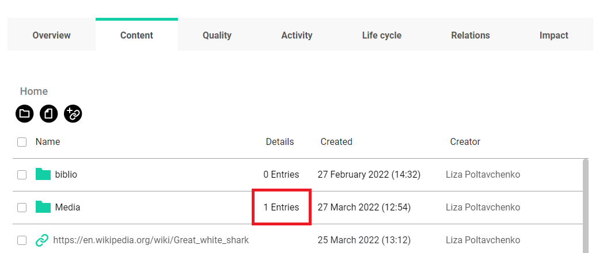 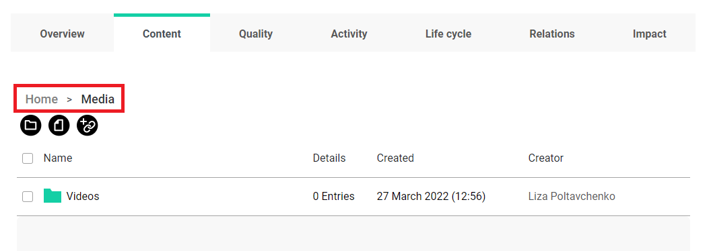
Let’s create another subfolder for short videos inside the “Videos” directory. The correct full path to the “Videos” folder is “Media/Video”. For the sake of presentation, let’s pass the wrong path to a non-existing folder.
[90]:
subfolder_parent = "Videos"
subfolder_name = "Shorts"
ro.add_folders(name = subfolder_name, parent_folder = subfolder_parent)
Aborted...
Sorry, folder with provided path doesn't exist. Please make sure you are sending a correct path!
[90]:
{'identifier': '389c7803-23bd-405c-861d-dda7707c7c95',
'shared_link': 'https://w3id.org/ro-id-dev/43833c23-2242-48ef-8f0a-d925c0e1d3e9/folders/389c7803-23bd-405c-861d-dda7707c7c95',
'name': 'Shorts',
'description': None,
'parent_folder': None,
'ro': '43833c23-2242-48ef-8f0a-d925c0e1d3e9',
'created': '2022-03-27T10:58:58.251426+0000',
'creator': 'liza.poltavchenko00@gmail.com',
'modificator': None,
'modified': '2022-03-27T10:58:58.252024+0000',
'created_on': '2022-03-27T10:58:58.251426+0000',
'created_by': 'liza.poltavchenko00@gmail.com',
'modified_on': '2022-03-27T10:58:58.252024+0000',
'modified_by': None,
'original_created_on': None,
'original_created_by': None,
'original_creator_name': None,
'authors_credits': ['liza.poltavchenko00@gmail.com'],
'contributors_credits': [],
'path': 'Shorts',
'read_only': False,
'api_link': 'https://rohub2020-rohub.apps.paas-dev.psnc.pl/api/folders/389c7803-23bd-405c-861d-dda7707c7c95/'}
The “Shorts” folder has been created, but it is in the Home folder because the path to the “Movies” folder doesn’t exist! 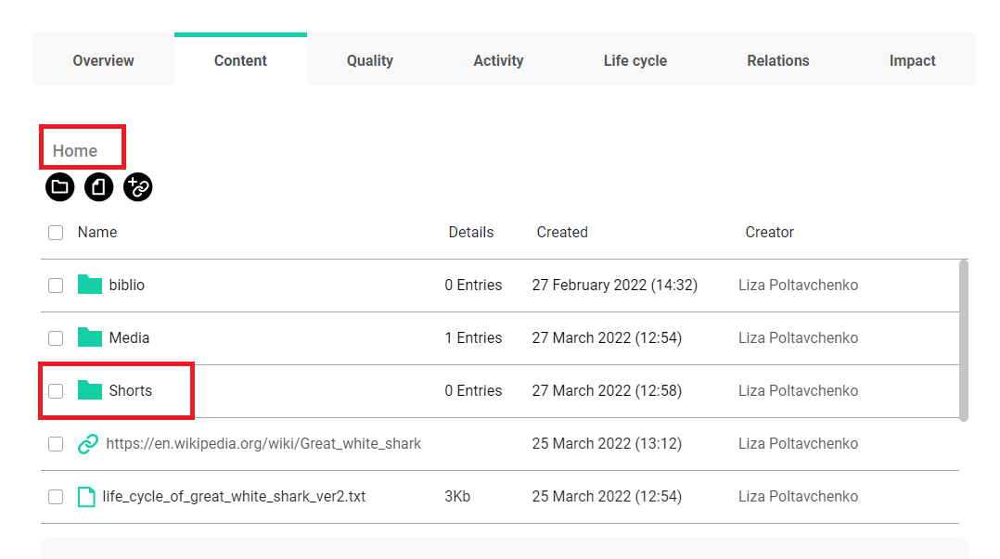
[91]:
ro.list_folders()
[91]:
| identifier | name | description | creator | created_on | modified_on | path | |
|---|---|---|---|---|---|---|---|
| 0 | 843b6081-89de-41c8-8fce-c47b5ea789f5 | biblio | None | liza.poltavchenko00@gmail.com | 2022-02-27T13:32:54.720931+0000 | 2022-02-27T13:32:54.721650+0000 | biblio |
| 1 | 201b7d33-6982-4a85-bd67-d92eeb788156 | Media | Videos, photos and images | liza.poltavchenko00@gmail.com | 2022-03-27T10:54:02.304776+0000 | 2022-03-27T10:54:02.305365+0000 | Media |
| 2 | 389c7803-23bd-405c-861d-dda7707c7c95 | Shorts | None | liza.poltavchenko00@gmail.com | 2022-03-27T10:58:58.251426+0000 | 2022-03-27T10:58:58.252024+0000 | Shorts |
| 3 | 33cb9497-af92-44bc-a197-8269b9b8759f | Videos | None | liza.poltavchenko00@gmail.com | 2022-03-27T10:56:21.675908+0000 | 2022-03-27T10:56:21.676459+0000 | Media/Videos |
Add a resource to the specific folder
The add_external_resource() and add_internal_resource() functions have an option parameter “folder” that allow to locate resource directly in the specific folder. If omitted, the Resource will be placed in the “Home” folder by default, which we have seen previously. One thing to note is that the “Home” folder doesn’t exist outside of the portal - if we do load a Resource either in the library or through the API, we can see that this “Home” folder is simply portal
representation for the lack of folder.
Example 1 - adding a new Resource to the specific folder
Now let’s try to add/create a new external resource and locate it in the “Media” folder.
For example, let’s try to add an image of a greate white shark. We can pick “Image” as a resource type for this use case.
[92]:
image_res_title = "A great white shark photo"
image_res_type = "Image"
image_res_url = "https://images.unsplash.com/photo-1586115457457-b3753fe50cf1?ixlib=rb-1.2.1&ixid=MnwxMjA3fDB8MHxwaG90by1wYWdlfHx8fGVufDB8fHx8&auto=format&fit=crop&w=1088&q=80"
image_res_folder = "Media"
image_res = ro.add_external_resource(res_type = image_res_type, input_url = image_res_url, title = image_res_title, folder = image_res_folder)
Resource was successfully created with id = 52484997-ccbe-46dc-a672-add1ed299a0e
[93]:
image_res.show_metadata()
[93]:
{'identifier': '52484997-ccbe-46dc-a672-add1ed299a0e',
'type': 'Image',
'source': 'external',
'title': 'A great white shark photo',
'description': None,
'url': 'https://images.unsplash.com/photo-1586115457457-b3753fe50cf1?ixlib=rb-1.2.1&ixid=MnwxMjA3fDB8MHxwaG90by1wYWdlfHx8fGVufDB8fHx8&auto=format&fit=crop&w=1088&q=80',
'folder': 'Media',
'path': 'https://images.unsplash.com/photo-1586115457457-b3753fe50cf1?ixlib=rb-1.2.1&ixid=MnwxMjA3fDB8MHxwaG90by1wYWdlfHx8fGVufDB8fHx8&auto=format&fit=crop&w=1088&q=80',
'size': None,
'creator': 'liza.poltavchenko00@gmail.com',
'created_on': '2022-03-27T11:01:11.971405+0000',
'modified_on': '2022-03-27T11:01:11.972051+0000',
'download_url': 'https://images.unsplash.com/photo-1586115457457-b3753fe50cf1?ixlib=rb-1.2.1&ixid=MnwxMjA3fDB8MHxwaG90by1wYWdlfHx8fGVufDB8fHx8&auto=format&fit=crop&w=1088&q=80'}
As we expected, our new image appeared directly in the “Media” folder. 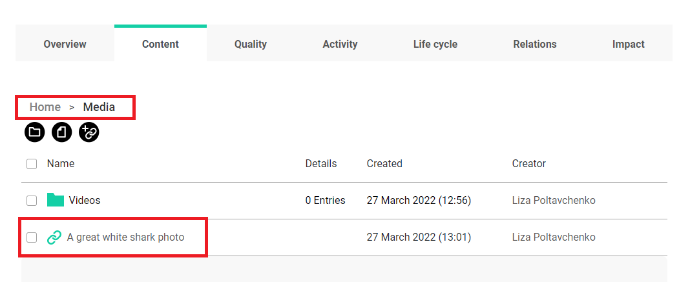
At this point, we know how to list all folders associated with the Research Object. We also know how to list all Resources for a specific Research Object. There is one additional attribute that can become handy. Research Object can access its content, which displays a list of dictionaries showing a complete structure of resources - folders relation within the Research Object.
To load the content so that it is accessible on-demand as a content attribute, one has to load it by running get_content() first.
The “folder” parameter of the add_internal_resource function works in the same way.
Example 2 - moving an existing Resource to the specific folder
We can change the location of a Resource by updating its metadata. That way, we can move a specific Resource to the folder of our choice.
Let’s try to load a video Resource called “A swimming shark”
[97]:
my_res = ro.list_resources()
my_res
[97]:
| identifier | type | source | title | description | url | name | path | size | creator | created_on | modified_on | download_url | |
|---|---|---|---|---|---|---|---|---|---|---|---|---|---|
| 0 | 0aa05d06-0ad5-4c89-b59e-1af5c17e7739 | Paper | external | None | None | https://en.wikipedia.org/wiki/Great_white_shark | None | https://en.wikipedia.org/wiki/Great_white_shark | NaN | liza.poltavchenko00@gmail.com | 2022-03-25T12:12:18.548321+0000 | 2022-03-27T10:48:34.905035+0000 | https://en.wikipedia.org/wiki/Great_white_shark |
| 1 | 52484997-ccbe-46dc-a672-add1ed299a0e | Image | external | A great white shark photo | None | https://images.unsplash.com/photo-158611545745... | A great white shark photo | https://images.unsplash.com/photo-158611545745... | NaN | liza.poltavchenko00@gmail.com | 2022-03-27T11:01:11.971405+0000 | 2022-03-27T11:01:13.689529+0000 | https://images.unsplash.com/photo-158611545745... |
| 2 | 1872179f-6e5b-43db-a535-bbbe562e0263 | Document | internal | None | None | None | life_cycle_of_great_white_shark_ver2.txt | life_cycle_of_great_white_shark_ver2.txt | 2127.0 | liza.poltavchenko00@gmail.com | 2022-03-25T11:54:04.216070+0000 | 2022-03-27T10:52:36.803226+0000 | https://rohub2020-rohub.apps.paas-dev.psnc.pl/... |
| 3 | 5bb4fc3a-30b6-4551-9c3c-9bcdf0962394 | File | internal | None | None | None | presentation.pdf | presentation.pdf | NaN | liza.poltavchenko00@gmail.com | 2022-03-25T12:16:13.648398+0000 | 2022-03-25T12:16:16.374553+0000 | https://rohub2020-rohub.apps.paas-dev.psnc.pl/... |
| 4 | 29690986-efc0-4dec-a7aa-0966f6daa1c9 | Other | internal | None | None | None | resources.zip | resources.zip | 32912886.0 | liza.poltavchenko00@gmail.com | 2022-03-25T12:17:54.943091+0000 | 2022-03-25T12:17:57.529986+0000 | https://rohub2020-rohub.apps.paas-dev.psnc.pl/... |
| 5 | f7f77553-200d-4120-a1d2-ff0a359ff488 | File | internal | A swimming shark | None | None | A swimming shark | video_1.mp4 | 12221703.0 | liza.poltavchenko00@gmail.com | 2022-03-25T12:16:14.331689+0000 | 2022-03-27T10:31:48.385952+0000 | https://rohub2020-rohub.apps.paas-dev.psnc.pl/... |
| 6 | 2a161917-90fa-4b57-8121-df42d9d68f69 | File | internal | None | None | None | video_2.mp4 | video_2.mp4 | NaN | liza.poltavchenko00@gmail.com | 2022-03-25T12:16:15.120380+0000 | 2022-03-25T12:16:17.648394+0000 | https://rohub2020-rohub.apps.paas-dev.psnc.pl/... |
[98]:
video_res_id = my_res.loc[5, 'identifier']
video_res = rohub.resource_load(identifier = video_res_id)
Resource was successfully loaded with id = f7f77553-200d-4120-a1d2-ff0a359ff488
[99]:
print(video_res.folder)
None
As expected, there is no information associated with the folder since the Resource is not placed in any directory (as explained before, the “Home” directory is just the way portal denotes lack of it).
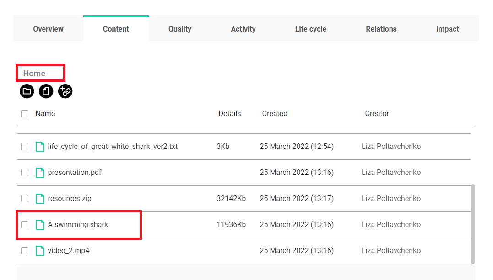[100]:
my_folders = ro.list_folders()
my_folders
[100]:
| identifier | name | description | creator | created_on | modified_on | path | |
|---|---|---|---|---|---|---|---|
| 0 | 843b6081-89de-41c8-8fce-c47b5ea789f5 | biblio | None | liza.poltavchenko00@gmail.com | 2022-02-27T13:32:54.720931+0000 | 2022-02-27T13:32:54.721650+0000 | biblio |
| 1 | 201b7d33-6982-4a85-bd67-d92eeb788156 | Media | Videos, photos and images | liza.poltavchenko00@gmail.com | 2022-03-27T10:54:02.304776+0000 | 2022-03-27T10:54:02.305365+0000 | Media |
| 2 | 389c7803-23bd-405c-861d-dda7707c7c95 | Shorts | None | liza.poltavchenko00@gmail.com | 2022-03-27T10:58:58.251426+0000 | 2022-03-27T10:58:58.252024+0000 | Shorts |
| 3 | 33cb9497-af92-44bc-a197-8269b9b8759f | Videos | None | liza.poltavchenko00@gmail.com | 2022-03-27T10:56:21.675908+0000 | 2022-03-27T10:56:21.676459+0000 | Media/Videos |
Now, let’s pick a path we would like move our Resource into.
[101]:
videos_path = my_folders.loc[3, 'path']
videos_path
[101]:
'Media/Videos'
[102]:
video_res.folder = videos_path
[103]:
video_res.update_metadata()
[103]:
{'title': 'A swimming shark',
'folder': '33cb9497-af92-44bc-a197-8269b9b8759f',
'type': 'File'}
Great, our Resource is now under the directory we have chosen
Now we can see that the video was moved to “Videos” folder in portal. 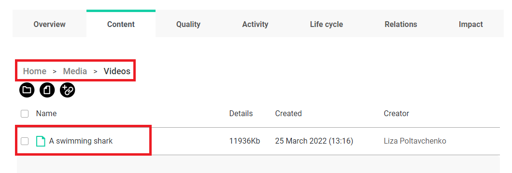
Deleting a folder
The delete_folder function deletes the selected folder. This function has one parameter: the path to the specific folder.
Let’s get the path to the folder “Shorts” from the table of folders belonging to the research object ro and delete this folder.
[106]:
ro_folders = ro.list_folders()
ro_folders
[106]:
| identifier | name | description | creator | created_on | modified_on | path | |
|---|---|---|---|---|---|---|---|
| 0 | 843b6081-89de-41c8-8fce-c47b5ea789f5 | biblio | None | liza.poltavchenko00@gmail.com | 2022-02-27T13:32:54.720931+0000 | 2022-02-27T13:32:54.721650+0000 | biblio |
| 1 | 201b7d33-6982-4a85-bd67-d92eeb788156 | Media | Videos, photos and images | liza.poltavchenko00@gmail.com | 2022-03-27T10:54:02.304776+0000 | 2022-03-27T10:54:02.305365+0000 | Media |
| 2 | 389c7803-23bd-405c-861d-dda7707c7c95 | Shorts | None | liza.poltavchenko00@gmail.com | 2022-03-27T10:58:58.251426+0000 | 2022-03-27T10:58:58.252024+0000 | Shorts |
| 3 | 33cb9497-af92-44bc-a197-8269b9b8759f | Videos | None | liza.poltavchenko00@gmail.com | 2022-03-27T10:56:21.675908+0000 | 2022-03-27T10:56:21.676459+0000 | Media/Videos |
[107]:
shorts_path = ro_folders.loc[2, 'path']
ro.delete_folder(path = shorts_path)
Folder successfully deleted!
Let’s reload the folders list to inspect changes.
[108]:
ro_folders = ro.list_folders()
ro_folders
[108]:
| identifier | name | description | creator | created_on | modified_on | path | |
|---|---|---|---|---|---|---|---|
| 0 | 843b6081-89de-41c8-8fce-c47b5ea789f5 | biblio | None | liza.poltavchenko00@gmail.com | 2022-02-27T13:32:54.720931+0000 | 2022-02-27T13:32:54.721650+0000 | biblio |
| 1 | 201b7d33-6982-4a85-bd67-d92eeb788156 | Media | Videos, photos and images | liza.poltavchenko00@gmail.com | 2022-03-27T10:54:02.304776+0000 | 2022-03-27T10:54:02.305365+0000 | Media |
| 2 | 33cb9497-af92-44bc-a197-8269b9b8759f | Videos | None | liza.poltavchenko00@gmail.com | 2022-03-27T10:56:21.675908+0000 | 2022-03-27T10:56:21.676459+0000 | Media/Videos |
The “Shorts” folder is now gone.
Fortunately, we could delete the “Shorts” directory as it didn’t contain any entries. How about the situation where the selected folder does contain other folders or resources?
Let’s try to see what happens.
[ ]:
media_path = ro_folders.loc[1, 'path']
ro.delete_folder(path = media_path)
An error has occurred: {"detail":"Folder Media contains nested Folders or Resources and can't be deleted."}.
We should delete all entries in the folder before we have permission to delete that folder itself.
Deleting Resource
resource_delete() at the rohub level can delete a Resource without loading it as a Python object. It is a quick and clean way of deleting resources, but if one would like to inspect a Resource before deleting it, a better choice is to do this in two steps:
load a Resource object;
use Resource representation as a class to access the
delete()method.
Example 1 - deleting Resource directly
Let’s choose one of the resources that is associated with the ro object.
[109]:
ro_resources = ro.list_resources()
ro_resources[3:]
[109]:
| identifier | type | source | title | description | url | name | path | size | creator | created_on | modified_on | download_url | |
|---|---|---|---|---|---|---|---|---|---|---|---|---|---|
| 3 | 5bb4fc3a-30b6-4551-9c3c-9bcdf0962394 | File | internal | None | None | None | presentation.pdf | presentation.pdf | NaN | liza.poltavchenko00@gmail.com | 2022-03-25T12:16:13.648398+0000 | 2022-03-25T12:16:16.374553+0000 | https://rohub2020-rohub.apps.paas-dev.psnc.pl/... |
| 4 | 29690986-efc0-4dec-a7aa-0966f6daa1c9 | Other | internal | None | None | None | resources.zip | resources.zip | 32912886.0 | liza.poltavchenko00@gmail.com | 2022-03-25T12:17:54.943091+0000 | 2022-03-25T12:17:57.529986+0000 | https://rohub2020-rohub.apps.paas-dev.psnc.pl/... |
| 5 | f7f77553-200d-4120-a1d2-ff0a359ff488 | File | internal | A swimming shark | None | None | A swimming shark | Media/Videos/video_1.mp4 | 12221703.0 | liza.poltavchenko00@gmail.com | 2022-03-25T12:16:14.331689+0000 | 2022-03-27T11:20:40.512910+0000 | https://rohub2020-rohub.apps.paas-dev.psnc.pl/... |
| 6 | 2a161917-90fa-4b57-8121-df42d9d68f69 | File | internal | None | None | None | video_2.mp4 | video_2.mp4 | NaN | liza.poltavchenko00@gmail.com | 2022-03-25T12:16:15.120380+0000 | 2022-03-25T12:16:17.648394+0000 | https://rohub2020-rohub.apps.paas-dev.psnc.pl/... |
[110]:
presentation_id = ro_resources.loc[3, 'identifier']
presentation_id
[110]:
'5bb4fc3a-30b6-4551-9c3c-9bcdf0962394'
[111]:
rohub.resource_delete(identifier = presentation_id)
Resource successfully deleted!
Let’s reload the resources list to confirm that deletion was successful.
[112]:
ro_resources = ro.list_resources()
ro_resources[ro_resources.identifier == presentation_id]
[112]:
| identifier | type | source | title | description | url | name | path | size | creator | created_on | modified_on | download_url |
|---|
Example 2 - loading and deleting Resource
[114]:
ro_resources[3:]
[114]:
| identifier | type | source | title | description | url | name | path | size | creator | created_on | modified_on | download_url | |
|---|---|---|---|---|---|---|---|---|---|---|---|---|---|
| 3 | 29690986-efc0-4dec-a7aa-0966f6daa1c9 | Other | internal | None | None | None | resources.zip | resources.zip | 32912886.0 | liza.poltavchenko00@gmail.com | 2022-03-25T12:17:54.943091+0000 | 2022-03-25T12:17:57.529986+0000 | https://rohub2020-rohub.apps.paas-dev.psnc.pl/... |
| 4 | f7f77553-200d-4120-a1d2-ff0a359ff488 | File | internal | A swimming shark | None | None | A swimming shark | Media/Videos/video_1.mp4 | 12221703.0 | liza.poltavchenko00@gmail.com | 2022-03-25T12:16:14.331689+0000 | 2022-03-27T11:20:40.512910+0000 | https://rohub2020-rohub.apps.paas-dev.psnc.pl/... |
| 5 | 2a161917-90fa-4b57-8121-df42d9d68f69 | File | internal | None | None | None | video_2.mp4 | video_2.mp4 | NaN | liza.poltavchenko00@gmail.com | 2022-03-25T12:16:15.120380+0000 | 2022-03-25T12:16:17.648394+0000 | https://rohub2020-rohub.apps.paas-dev.psnc.pl/... |
For example, we can use the resources.zip file in the third row.
[115]:
zip_res_id = ro_resources.loc[3, 'identifier']
zip_res = rohub.resource_load(identifier = zip_res_id)
Resource was successfully loaded with id = 29690986-efc0-4dec-a7aa-0966f6daa1c9
[116]:
zip_res.delete()
Resource successfully deleted!
[117]:
ro_resources = ro.list_resources()
ro_resources[ro_resources.identifier == zip_res_id]
[117]:
| identifier | type | source | title | description | url | name | path | size | creator | created_on | modified_on | download_url |
|---|